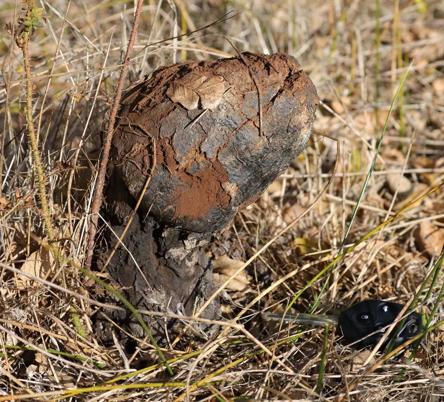

真菌 · 真菌界
彩色豆马勃 Pisolithus tinctorius

外形像一坨褐色小土块的菌根真菌，内部布满彩色小孢子囊，能与松树等形成外生菌根，用于荒山造林。
- 分类
- 门担子菌门纲伞菌纲目牛肝菌目科硬皮马勃科属豆马勃属
- 栖息环境
- 松树、栎树林地的沙质土壤，与树木形成外生菌根
- 地理分布
- 温带和热带地区广泛分布，中国南北方均有记录
- 保护级别
- 暂无评估（IUCN 未评估，中国未列入重点保护名录）
物种志
彩色豆马勃是担子菌门牛肝菌目的外生菌根真菌，子实体呈不规则的球形、梨形或棒状，高 5–20 cm，表面呈褐色、灰褐色，粗糙而多皱；内部由许多小孢子囊组成，成熟时小孢子囊呈黄褐色、黑色相间的颗粒状，像“豆子”一样，因此得名。孢子粉呈黄褐色。
彩色豆马勃多生于松树、栎树等林地的沙质土壤中，与树木形成外生菌根，在温带和热带地区广泛分布，中国南方和北方都有记录。它能帮助树木吸收水分和养分，提高抗旱和抗病能力，因此在荒山造林、矿区植被恢复中被用作菌根菌接种剂。它的子实体成熟后内部会变成粉末状孢子团，幼嫩时不宜食用，成熟后也无食用价值。
形态与习性
- 子实体不规则球形或棒状，高 5–20 cm，表面褐色多皱
- 内部由黄褐与黑色相间的小孢子囊组成
- 孢子成熟后形成黄褐色孢子粉
- 共生与松树、栎树形成外生菌根
- 生态用途荒山造林和矿区植被恢复的菌根接种剂
- 食用性幼嫩时不宜食用，成熟后无食用价值
- 分布温带和热带沙质林地广泛分布
趣味知识
- 彩色豆马勃内部布满黄褐与黑色相间的小孢子囊，像一颗颗豆子。
- 它与松树、栎树形成外生菌根，能帮助树木吸收养分。
- 彩色豆马勃被用作荒山造林和矿区植被恢复的菌根接种剂。
- 成熟后内部变成粉末状孢子团，没有食用价值。